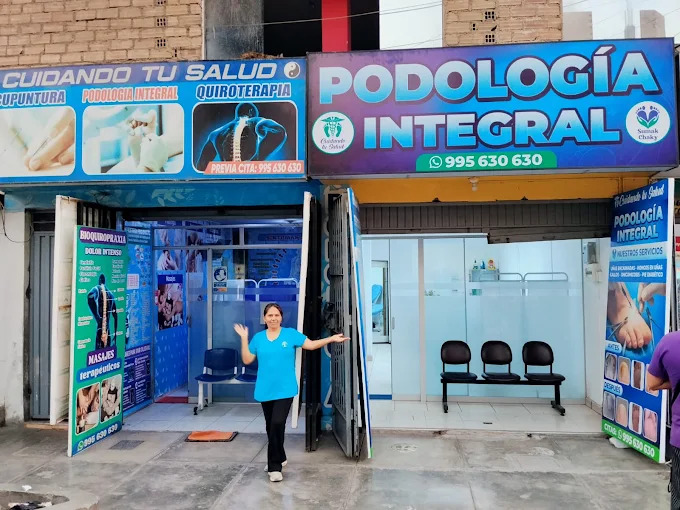

Valoración promedio de nuestros pacientes
Lo que dicen quienes ya nos visitaron
4,9
Valoración promedio de nuestros pacientes

4,9 de valoraciónResumen de valoraciones
pacientes atendidos
nos recomendaría
Testimonios destacados
“Llegué con un dolor de espalda que no me dejaba trabajar. En pocas sesiones volví a mi rutina y además me enseñaron a cuidarme.”
“Tenía una uña encarnada hacía meses y me daba miedo ir. Fueron muy delicados y no sentí dolor. Ahora camino tranquilo.”
“Las plantillas a medida cambiaron mi día a día. Ya no termino la jornada con los pies destrozados.”
“Mi papá tiene diabetes y desde que lo llevamos a revisión de pies estamos mucho más tranquilos. Un trato muy humano.”
“Corro maratones y tenía una molestia que no se iba. Con el plan de ajustes y ejercicios pude volver a entrenar.”
“Trabajo en oficina y el cuello me mataba. Me explicaron cómo sentarme y hoy casi no tengo dolores de cabeza.”
Más opiniones
Atención muy cálida y puntual. Salí con un plan claro.
Por fin alguien que me explicó por qué me dolían los talones.
Instalaciones limpias y personal amable. Volveré.
La faja lumbar que me recomendaron me ayudó muchísimo en el trabajo.
Me atendieron con mucha paciencia a mi mamá de 78 años.
Los ejercicios que me enseñaron los hago todos los días y noto la diferencia.
Tu historia también puede ser la próxima
Agenda tu cita y empieza a sentirte mejor.